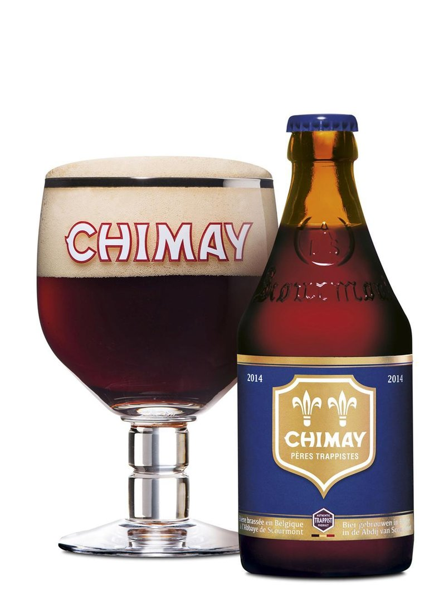

La Chimay Bleue
La Chimay Bleue est la plus forte et la plus complexe des bières trappistes de l'abbaye de Notre Dame de Scourmont. Elle offre un bouquet d'épices et un nez fruité, très caractéristique de la Chimay. En bouche, elle procure une longue amertume et traduit une torréfaction prononcée. A l'origine, uniquement conçue pour Noël, elle est désormais brassée régulièrement depuis 1958. En grande bouteille, elle est appelée Chimay Grande Réserve. Cette bière est millésimée, elle demande donc à être vieillie quelques années. Son degrès est de 9.